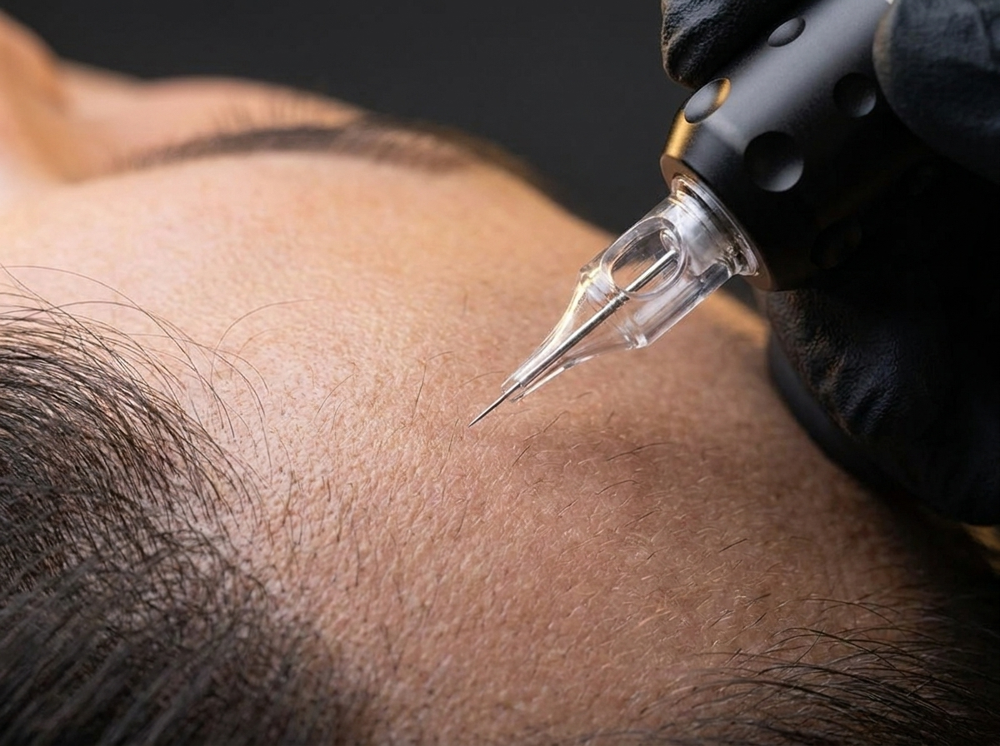

Behandelgids

Een haartransplantatie kan littekens achterlaten — zichtbaar als een fijne lijn bij een strip-procedure (FUT), of als kleine puntlittekens verspreid over het donorgebied bij FUE. Littekencamouflage met micropigmentatie maakt deze littekens visueel minder opvallend door ze te laten opgaan in het omliggende haar en de huidtint.
Bij FUE (Follicular Unit Extraction) worden individuele haarfollikels één voor één verwijderd, wat resulteert in kleine, verspreide puntlittekens over het donorgebied. Bij een strip-procedure (FUT) wordt een strook hoofdhuid verwijderd, wat een langere, lijnvormige litteken achterlaat. Beide typen littekens kunnen met micropigmentatie worden gecamoufleerd, al vraagt elk type een eigen aanpak in pigmentdichtheid en -patroon.
Pigment wordt zorgvuldig afgestemd op de huidtint en de dichtheid van het omliggende haar. Bij puntlittekens (FUE) wordt vaak dezelfde puntsgewijze techniek gebruikt als bij SMP, zodat het litteken visueel oplost tussen de gesimuleerde folikels. Bij een lijnvormig litteken (strip) wordt het pigment fijn verdeeld binnen en rond de littekenzone, zodat de scherpe contourlijn vervaagt in plaats van hard afgetekend te blijven.
Het litteken moet eerst volledig genezen zijn voordat pigmentatie kan starten. Dit verschilt per persoon en per type ingreep. Tijdens het consult wordt de staat van het litteken beoordeeld en wordt in overleg bepaald wanneer starten verantwoord is.
Het doel is niet om het litteken volledig te laten verdwijnen, maar om het optisch te laten samensmelten met de omgeving — waardoor het bij normale afstand en belichting nauwelijks nog opvalt, ook bij kort geknipt haar. Net als bij SMP wordt het resultaat opgebouwd in meerdere sessies voor een natuurlijk en duurzaam effect.
Tijdens een persoonlijk consult beoordelen we uw litteken en bespreken we de mogelijkheden.
Plan een consult